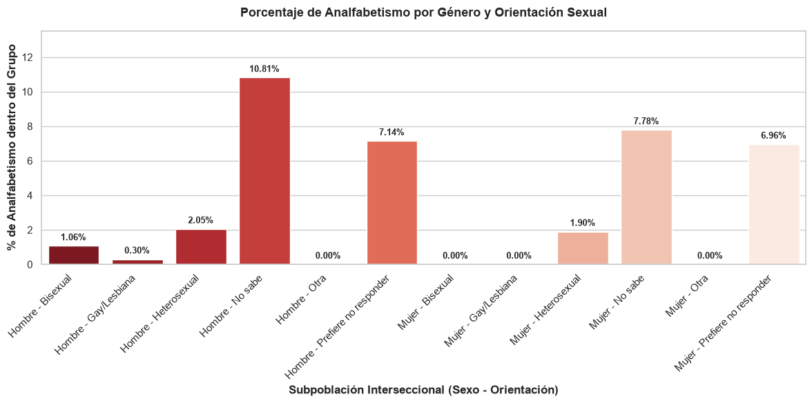

Taller 1Exploración y variables sensibles
La trampa de la representatividad
La pregunta
¿Qué tan bien representados están los grupos vulnerables en la CASEN 2024? ¿Y qué pasa cuando cruzamos atributos para mirar grupos más pequeños?
Qué hicimos
Revisamos la estructura de la base, separamos las variables numéricas de las categóricas y miramos cómo se distribuyen las variables sensibles: sexo, pertenencia a pueblos indígenas, orientación sexual y dificultades de salud. Después cruzamos sexo con orientación sexual para ver el analfabetismo dentro de cada combinación.
- 97,58% se declara heterosexual El 2,4% restante se reparte entre gay o lesbiana, bisexual, otra orientación, no sabe y prefiere no responder.
- 13,95% pertenece a un pueblo indígena El 86,05% restante no pertenece a ninguno.
Qué encontramos
Al cruzar orientación sexual con alfabetismo aparecieron resultados que no tenían sentido. Los hombres que dicen no saber su orientación sexual tenían un 10,81% de analfabetismo, muy por sobre el resto, y varios grupos, como las mujeres bisexuales, lesbianas o de otra orientación, aparecían con 0%. No es que esos grupos sean así: tienen tan pocos casos que cualquier porcentaje se vuelve extremo. Si se entrena un modelo con datos así, aparece la paradoja de la exactitud: el modelo aprende sobre todo de la mayoría y se equivoca mucho más con las minorías (Buolamwini y Gebru, 2018; Barocas y Selbst, 2016).
Qué consecuencias puede tener
- Personas que quedan fuera de las ayudas. Si el Estado usara un modelo entrenado con estos desbalances para focalizar subsidios, acertaría con la mayoría heterosexual y fallaría mucho más con las minorías sexuales y otros grupos pequeños. Familias con carencias graves quedarían marcadas como “no vulnerables” y sin bonos, subsidios de vivienda o atención de salud.
- Prejuicios que se vuelven reglas. Un modelo que aprende una correlación falsa, como asociar una orientación sexual minoritaria con menos educación, puede llevar ese error a otros sistemas automáticos, por ejemplo de empleo, crédito o vivienda, y castigar a esas personas con un argumento que parece técnico.
- Una neutralidad que no es tal. Es fácil escudarse en que “lo decidió un modelo con 95% de exactitud”. Así, desigualdades históricas pasan por verdades matemáticas que nadie discute (Barocas y Selbst, 2016), y la persona afectada no tiene cómo apelar.
Figura 1 · Taller 1
Analfabetismo según sexo y orientación sexual
